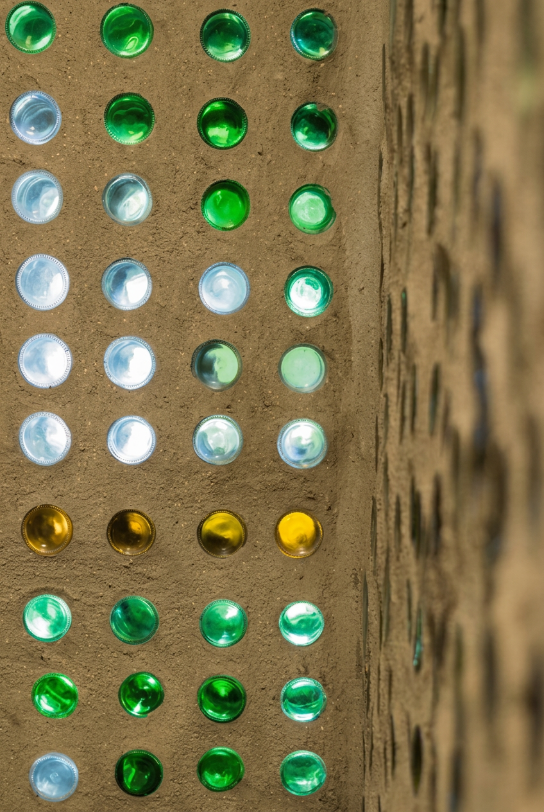
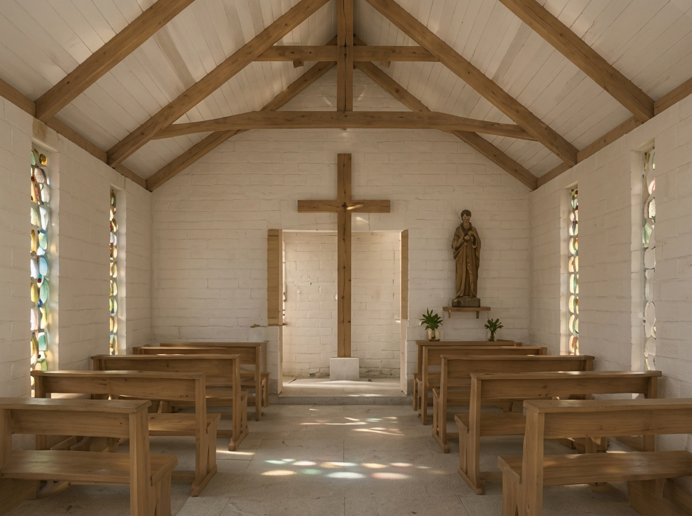
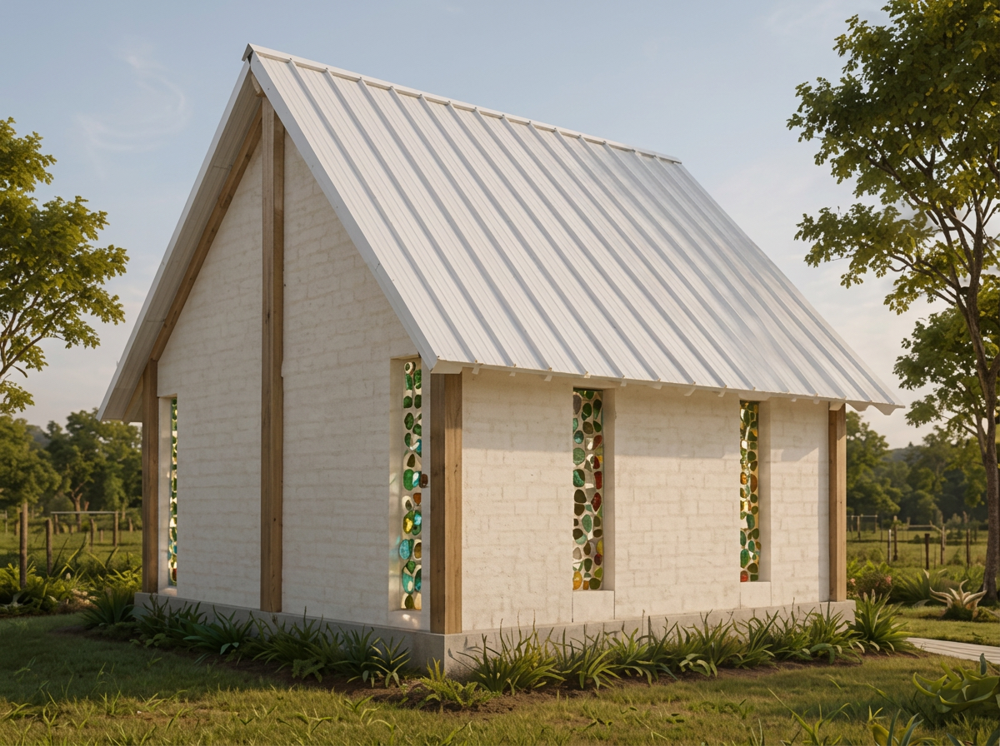
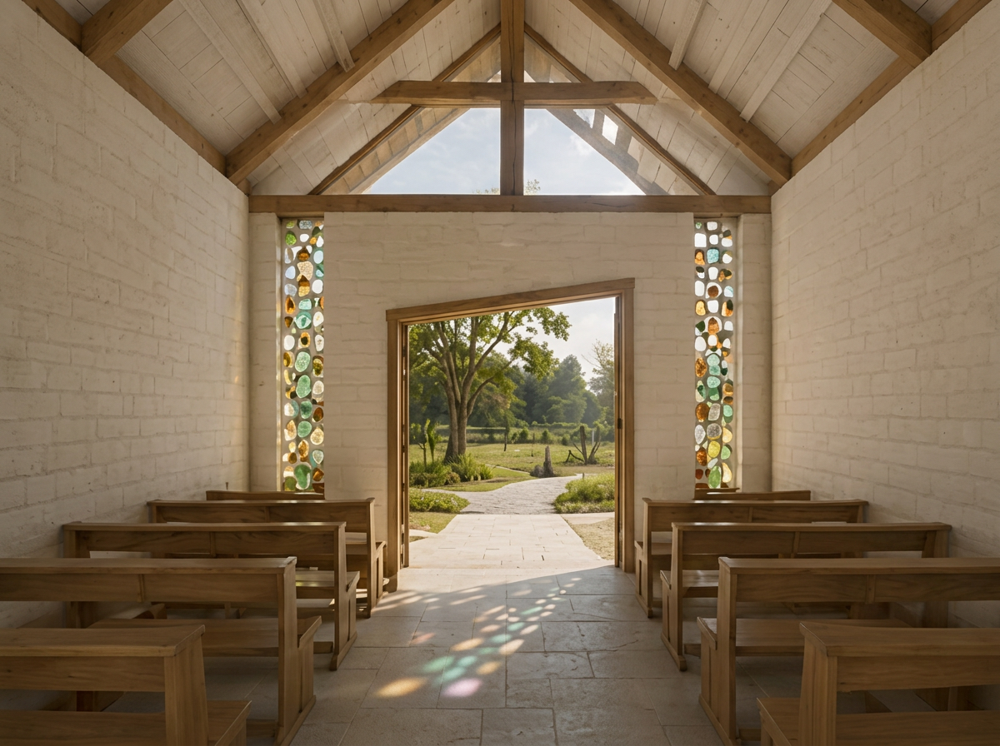
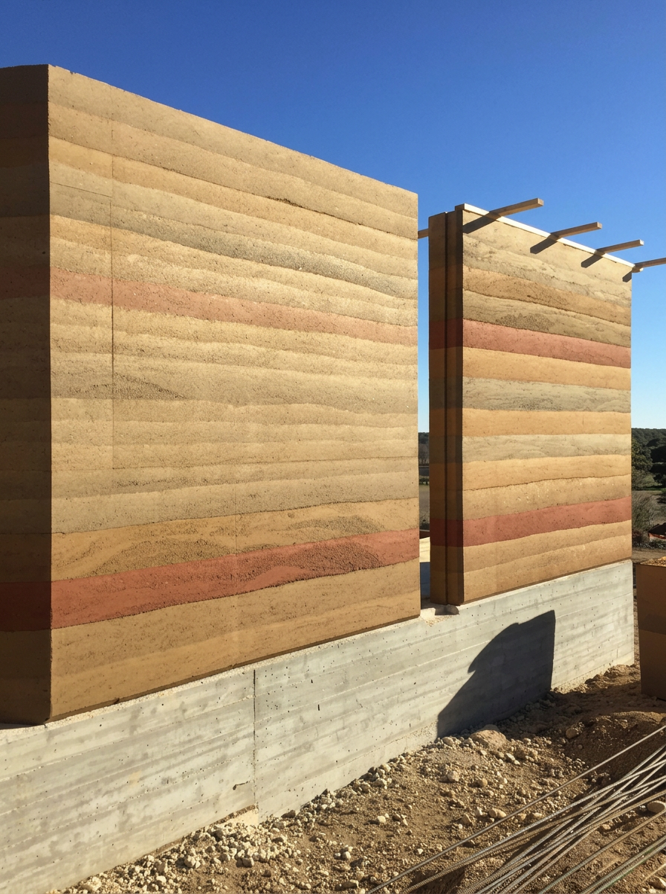

Tijolos ecológicos e vitrais
Vitrais artísticos produzidos com garrafas de vidro reaproveitadas.
Um refúgio familiar de contemplação, erguido em tijolo ecológico, taipa de pilão e madeira tratada.

A arquitetura une recolhimento espiritual à reverência pelos ciclos naturais, valorizando o trabalho manual e o manejo ético dos recursos.




Vitrais artísticos produzidos com garrafas de vidro reaproveitadas.

A parede principal de terra garante inércia térmica e presença terrosa.
Treliças de madeira tratada formam o coração estrutural e estético.
A altura livre generosa confere leveza, amplitude e recolhimento.